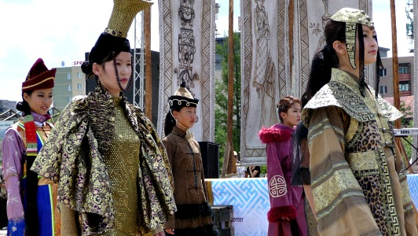

People
With a population of around 3 million, Mongolia is the most sparsely populated country in the world. In fact, Mongolian people are slightly outnumbered by horses!
But less than half of Mongolian people actually live in their homeland. China and Russia host large Mongol populations. And in the last twenty years thousands of Mongolians have emigrated around the globe.
But Mongolia, also known as Outer Mongolia, remains the Mongol homeland.
Despite Outer Mongolia's vast size, 38 percent of the population has squashed itself into the capital of Mongolia - Ulan Bator. There you will find the full urban deal - traffic jams, pollution and stressed-out pedestrians.
When you walk the streets of Ulan Bator, you will see the nomads and urbanites rubbing shoulders together. The nomads wearing traditional deels and the urbanites dressed in cashmere sweaters and chic fashions.
The urban Mongol lives a life which you would find familiar. Many work nine till five in shops, banks and offices. Others work in restaurants, hospitals and schools. Some Mongolians work as teachers, some paint, some sing, others are movie stars.
But...Only about half the population lives in cities. The other half still roams free on the vast steppes or in the Gobi desert.
Around 1.5 million nomads live on the steppes. They herd sheep, goats, yaks, horses and two-humped camels. Everything they own comes from their herds. They even make their own alcohol - fermented mares' milk!
The typical nomad lives in a felt tent. The tents are called gers, and come in all sizes but one shape - circular. Gers are held together without a single nail, they stand as monuments to a nomad's genius and self-sufficient way of life.
Nomads live and breathe hospitality. You should make sure your itinerary includes a night or two with them - or at least a visit. But watch out for the dogs!
Half a million still live the life of real men galloping across the steppes. But many have laid down this life and migrated to the cities.
Once in the city, some have gone on to lead their country while others have struggled with poverty and alcohol.
One of the biggest problems for the urbanized nomads is a lack of pasture in the city. This led to a law which prohibits nomads bringing their herds here.
With no herds or urban skills, many have floundered.
Those who remain on the steppe have fared better. They maintain ancient traditions which determine their roles and even where they should sit in a ger.
Avoid embarrassing mistakes by reading about the nomadic people of Mongolia before you visit!
Mongolian women have always had a prominent position in Mongol society. At times they ruled the Mongol Empire - the largest empire the world has known.
That legacy has continued today with women active in every area of Mongolian society.
Mongolian women have also inherited a genetic legacy from their forebears. Chinggis Khan had a keen eye for beauty as he conquered his empire. You can see this genetic heritage on the streets and steppes of Mongolia today.
Like the men, nomadic women have a well-defined role in the Mongolian nomad's way of life.
Mongolia has a young population. Of the 3 million Mongolian people in this vast land - 1 million are below the age of 14!
They live a life Western children can only dream of! Free from the scourge of health and safety concerns, they climb, run, leap, wrestle... living life to the full.
You may meet a few Mongolian children with names such as Vicious Dog; Not a Human Being and I don't know. This might seem cruel, but their parents have their best interests at heart.
Life sucks for some, though. If you wander around the city for a day or two, you will likely meet Mongolian street kids.
They lead a grim life, but not exactly as reported by western media.
You will need to be firm with them, or they will follow you down the street forever. But please show them some respect!
Mongolian people share many physical characteristics: high cheekbones, honey-colored skin, the Mongolian blue spot...
But Mongols do not come from a single ethnic group. The Mongolian people come from several dozen tribes which over centuries have become interlinked through marriage and politics.
The Khalkh form the largest group - around eighty percent of the Mongolian population today. The remaining twenty percent divide into around sixteen distinct ethnic groups.
In the Western parts of Mongolia you will find the Bayad, Torguud, Uuld, Zakhchin, Myangad and the Uriankhai. In the South and East you will find the Darkhad, Buriyat, Barga, Uzemchin and Dariganga. The Kazakhs are the largest minority, found in the far West of Mongolia in Bayan-Ulgii. Smaller groups include the Tuva, Uriankhai, Khoton and Tsaatan.
As you tour Mongolia, make sure you link up with these ethnic groups. They lead fascinating lives and have a wealth of local knowledge they can impart.
And keep an eye on how the traditional Mongolian clothing changes as you travel from East to West!
The smallest group of Mongolian people mentioned above is the reindeer people - called Tsaatan in Mongolia. Numbering in the low hundreds they live in tepees which look remarkably like those of the American Indians.
If you come to Mongolia in the winter, then this ethnic group should come high on your list of must-meets.